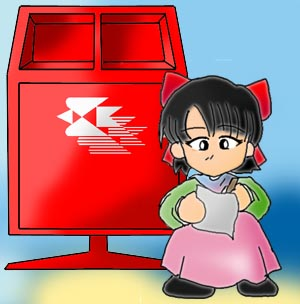

|  |
한아름 : 여기는 마을에 하나뿐인 우체국이에요. 여기서는 촌장님께 편지를 보낼 수 있죠. 저는 배운지가 얼마 안돼 글씨는를 잘 못써요. 하지만 지금 우리 멋진 촌장님께 편지를 쓰고 있어요. 무슨 편지냐구요 ? 여자가 남자에게 보내는 편지가 무슨 편지겠어요 ? 촌장님은 키작고, 배나오고, 덤벙대고, 약간 모자른것 빼고는 괜찮은 사람이에요. 예 ? 그럼, 잘난게 뭐가 있냐구요 ? 글쎄요.. 생각해보니 없네요. ^^; 여자친구가 없다고 신세타령 하시길래, 저라두 위로를 해드릴까 해서 편지를 쓰고 있어요. 제가 몇살이냐구요 ? 음. 몇살이었더라.. 하나 둘 셋 넷. 다섯살 이에요. 촌장님은 누구의 편지도 환영한다고 했어요. 물론 제 편지도 말이죠. 촌장님은 제편지를 받으시면 어떤 표정을 지을까요 ? |